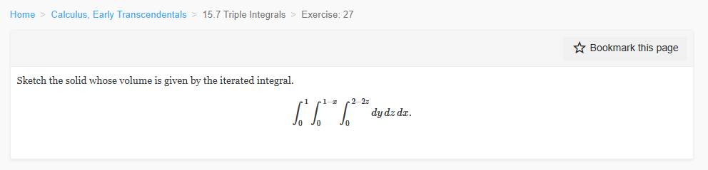

Please solve the problem in the following image.
(Image `20260928_152026_916546_utc_0800_0.png`. Alt text: Image: human_20260928_152026_916546_utc_0800)

20260928_152026_916546_utc_0800_0.png
End of problem
Answer
# Problem Solution: Sketching the Solid
The problem asks us to sketch the solid whose volume is given by the iterated triple integral:
$$
V = \int_{0}^{1} \int_{0}^{1-x} \int_{0}^{2-2z} \, dy \, dz \, dx
$$
## 1. Analysis of the Limits of Integration
To sketch the solid, we first identify the boundaries defined by the limits of integration. The integral is written in the order $dy \, dz \, dx$, which means the order of integration is $y$ (innermost), then $z$, and finally $x$ (outermost).
The bounds for each variable are:
- For $y$: $0 \le y \le 2 - 2z$
- For $z$: $0 \le z \le 1 - x$
- For $x$: $0 \le x \le 1$
## 2. Identifying the Boundary Surfaces
The solid is bounded by the following planes:
1. **$y = 0$**: The $xz$-plane.
2. **$y = 2 - 2z$**: A plane that can be rewritten as $y + 2z = 2$.
3. **$z = 0$**: The $xy$-plane.
4. **$z = 1 - x$**: A plane that can be rewritten as $x + z = 1$.
5. **$x = 0$**: The $yz$-plane.
Note that the upper limit for $x$ is $1$. When $x=1$, the condition $z \le 1 - x$ implies $z \le 0$, so $z=0$. Thus, the boundary $x=1$ is implicitly covered by the intersection of the other surfaces at $x=1, z=0$.
## 3. Finding the Vertices of the Solid
To sketch the shape accurately, we find the vertices where these planes intersect:
- Intersection of $x=0, y=0, z=0 \implies (0, 0, 0)$
- Intersection of $x=1, y=0, z=0 \implies (1, 0, 0)$
- Intersection of $x=1, z=0, y=2-2(0)=2 \implies (1, 2, 0)$
- Intersection of $x=0, z=0, y=2-2(0)=2 \implies (0, 2, 0)$
- Intersection of $x=0, y=0, z=1 \implies (0, 0, 1)$ (since $x+z=1$ and $y+2z=2$ at $x=0, y=0 \implies z=1$)
The five vertices are:
$$ (0,0,0), \quad (1,0,0), \quad (1,2,0), \quad (0,2,0), \quad (0,0,1) $$
## 4. Describing the Solid
The solid is a **pentahedron** (a five-faced polyhedron). Specifically, it is a **pyramid** with a rectangular base in the $xy$-plane.
- The **base** is the rectangle in the $z=0$ plane with vertices $(0,0,0), (1,0,0), (1,2,0), (0,2,0)$. Its dimensions are $1 \times 2$.
- The **apex** of the pyramid is the point $(0,0,1)$.
## 5. Visualization
Below are the sketches of the solid.
---
pgfplots_0.png
---
### Conclusion
The solid is a pyramid with a rectangular base on the $xy$-plane of area $2$ (from $x \in [0,1]$ and $y \in [0,2]$) and an apex at $(0,0,1)$.
The volume of such a pyramid is:
$$
V = \frac{1}{3} \times \text{Area(Base)} \times \text{height} = \frac{1}{3} \times (1 \times 2) \times 1 = \frac{2}{3}
$$
This matches the result obtained from direct integration.
$\boxed{\text{The solid is a pyramid with vertices } (0,0,0), (1,0,0), (1,2,0), (0,2,0), \text{ and } (0,0,1).}$